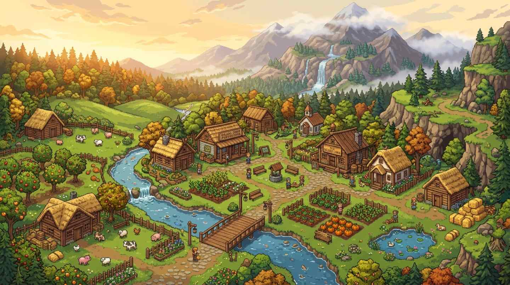

Pueblo Pelícano
La plaza, las tiendas y las casas hacen del pueblo el punto de encuentro de la comunidad y el corazón social del Valle.
Conocer a sus habitantes →
El escenario
Un pequeño mundo de caminos, casas, agua, bosque y montaña. Cada lugar tiene algo que hacer, alguien que conocer y una razón para volver.
Un pequeño recorrido
Cuatro postales para empezar. El resto del Valle aparece a medida que aprendés a mirarlo.
La plaza, las tiendas y las casas hacen del pueblo el punto de encuentro de la comunidad y el corazón social del Valle.
Conocer a sus habitantes →
Otra orilla
Un lugar para pescar, recolectar y cambiar el ritmo del día junto al mar.
Seguir hacia la pesca →
Hacia arriba
El lago, la carpintería y el camino hacia las minas hacen de esta zona una puerta natural a la aventura.
Seguir el camino →
Entre árboles
Un desvío de recolección, agua y caminos donde muchas veces el paseo empieza a convertirse en descubrimiento.
Seguir explorando →Una última pista
Hay caminos que no se explican solos, puertas que esperan el momento adecuado y rincones que sólo empiezan a tener sentido cuando avanzás.
Más allá de los caminos
Mientras construís tu granja, acumulás recursos, recolectás y contribuís a la comunidad, el mundo va dejando nuevas pistas. Algunas aparecen en la vida cotidiana; otras se esconden detrás de una misión, un lugar o una pequeña decisión.
Pesca, minería, combate, recolección y los secretos que rodean al Valle forman una aventura paralela a la agricultura: cuanto más avanzás, más grande parece el mundo.
Entrar en Exploración →
Tu espacio
Tu granja es el punto de partida desde el que todo lo demás comienza a crecer. Con el tiempo se llena de cultivos, animales, edificios, caminos, máquinas y pequeñas decisiones que hablan de cómo querés vivir.
Conocer la granja →